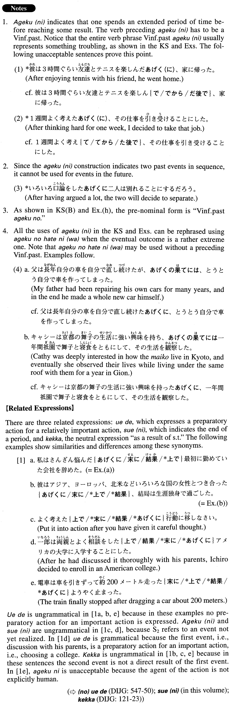

←
DoJG
→
あげく（に）
(A. 7)
Example sentences
(ksa).
さんざん考えた
あげく（に）
大学院へ進学することにした。
After thinking for a long time, I decided to go on to graduate school.
(ksb).
彼女の離婚は数年悩んだ
あげく
の決断だった。
Her divorce was a decision she made after agonizing for several years.
(a).
私はさんざん悩んだ
あげくに
最初に勤めていた会社を辞めた。
I quit the company where I first worked after thinking very hard (about what to do).
(b).
彼はアジア、ヨーロッパ、北米などいろいろな国の女性とつき合った
あげくに
、結局は生涯独身で過ごした
He dated women from various countries in Asia, Europe and North America, but in the end he spent his entire life single.
(c).
妻はあの靴がいい、この靴がいいと、いろいろと履いてみた
あげくに
、どれも買わずに店を出た。
Saying "I like this one" or "I like that one," my wife tried on all sorts of shoes, but after all that, she left the store without buying any of them.
(d).
山田は私の車を一か月も使った
あげく
、返す時お礼の一言も言わなかった。
After using my car for a whole month, Yamada didn't even say a word of thanks when he returned it.
(e).
さんざん迷った
あげく
、一年休職してアメリカに留学することにした。
After weighing my options for a long time, I finally decided to take a one-year leave from my company to study abroad in the U.S.
(f).
彼女は既婚の男性との恋に溺れた
あげくに
、自分の人生を台無しにしてしまった。
After falling in love with a married man, her own life was in ruins.
(g).
どのテレビを買おうかと迷った
あげく
、何も買わずに帰ってしまった。
I couldn't decide which television I should buy, so (in the end) I went home without buying any.
(h).
彼が自殺したのはよくよく悩みぬいた
あげく
のことだったのであろう。
It must have been after really agonizing that he committed suicide.
(i).
無料のネットサービスには、登録時に住所、氏名、電話番号、生年月日、
あげく
の果てには学歴、年収、家族構成など、様々な個人情報を要求してくるものがある。
There are some free Internet services that require at the time of registration your address, name, telephone number, date of birth, and at the end, all sorts of personal information such as educational background, annual income and family size, etc.
Formation
(i)
Vinformal past
あげく
(に)
話した
あげく
(に)
After someone talked
(ii)
Vinformal past
あげくの
Noun
考えた
あげくの
決断
A decision made after deliberation
